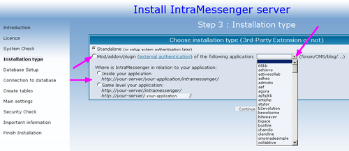
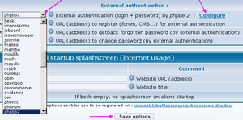
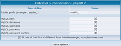

Foreword
You can choose to do authentication (check login and password) from another extern source.
-
If You have already a forum/CMS (or other), example : http://yourdomain/forum/
you can install IntraMessenger at same level : http://yourdomain/intramessenger/
or inside : http://yourdomain/forum/intramessenger/
-
So you will allow access to IntraMessenger only for forum registered users.
You just have to change parameters in IntraMessenger (nothing to do in the forum).
IntraMessenger will just check logins and passwords (users can be connected or not to the forum).
On setup
-

- Choose installation type: mod/AddOn/plugin.
- Select authentication (your application).
- Specify the location (of your application).
After install, updates to all external authentication types
- Modify options (can edit file /common/config/config.inc.php):
- Select option (_EXTERNAL_AUTHENTICATION):

- eventually : determine prefix
and connection paremeters (if one different from IntraMessenger, write them all):

- determine url (address) to register (_EXTERN_URL_TO_REGISTER)
(example: http://www.intramessenger.net/phpbb2/profile.php?mode=register&).

- determine url (address) to get back forgotten password (_EXTERN_URL_FORGET_PASSWORD)
(example: http://www.intramessenger.net/phpbb2/profile.php?mode=sendpassword&).
- See specific parameters below
- Check on page : /admin/list_options_auth_test.php
- Following options will automatically been updated:
- _USER_NEED_PASSWORD : enable
- _ALLOW_AUTO_ADD_NEW_USER_ON_SERVER : enable
- _PENDING_NEW_AUTO_ADDED_USER : disable
- _NEED_QUICK_REGISTER_TO_AUTO_ADD_NEW_USER : disable
- _USER_NEED_PASSWORD : enable
Specific parameters for activeCollab authentication
File /common/config/extern.config.inc.php : write license number in LICENSE_KEY (you can find it in config/licence.php in activeCollab).Specific parameters for Prestashop authentication
File /common/config/extern.config.inc.php : write code number in _COOKIE_KEY_ (you can find it in config/settings.inc.php in Prestashop).Specific parameters for ImpressCMS authentication
File /common/config/extern.config.inc.php:- value SDATA_DB_SALT : inside ImpressCMS, open file /mainfile.php row 30 (XOOPS_TRUST_PATH) : the path, and row 32 : the file to open.
- $extern_prefix : see SDATA_DB_PREFIX
Specific parameters for Kimai authentication
File /common/config/extern.config.inc.php : write code number $password_salt (you can find it in kimai/includes/autoconf.php in Kimai).Specific parameters for Oxwall authentication
File /common/config/extern.config.inc.php : write code number OW_PASSWORD_SALT (you can find it in oxwall/ow_includes/config.php in Oxwall).
THeUDS © 2006 - 2013